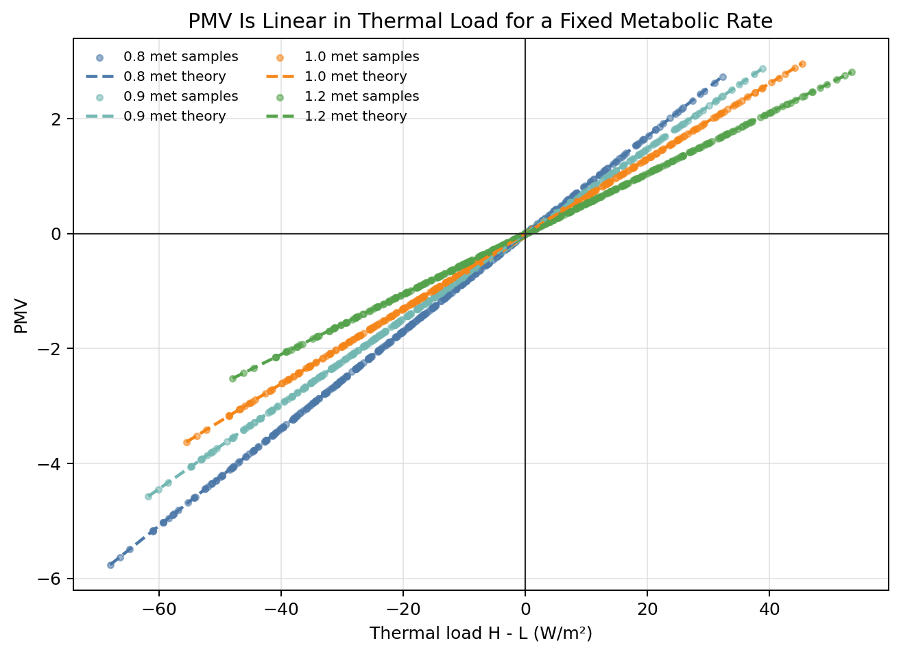
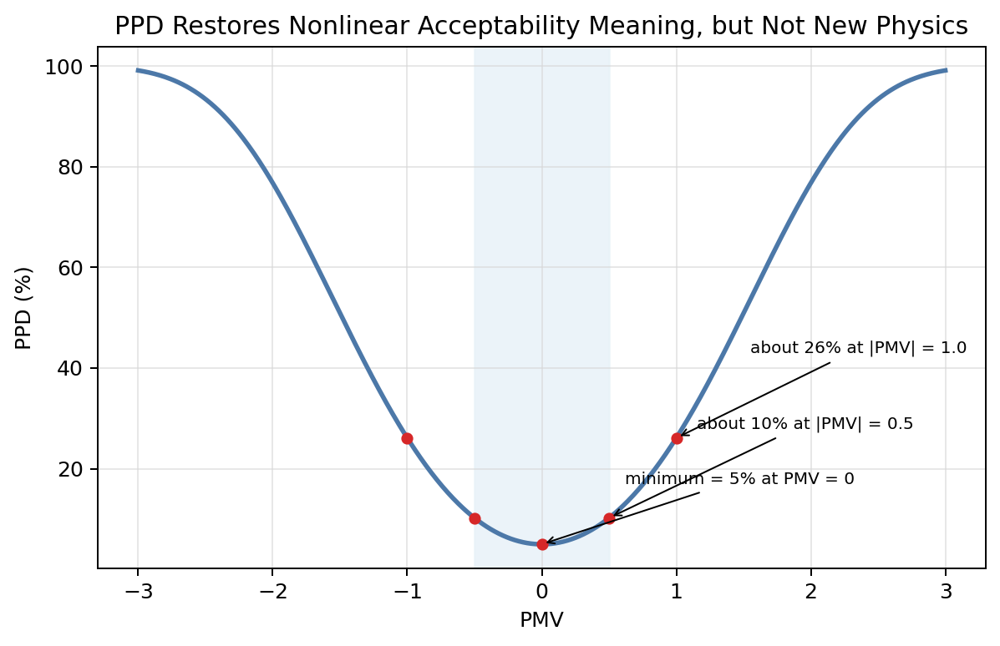
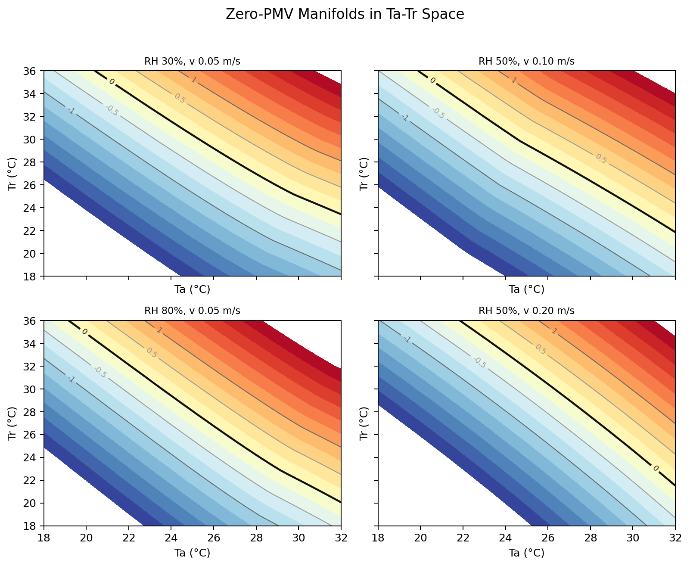
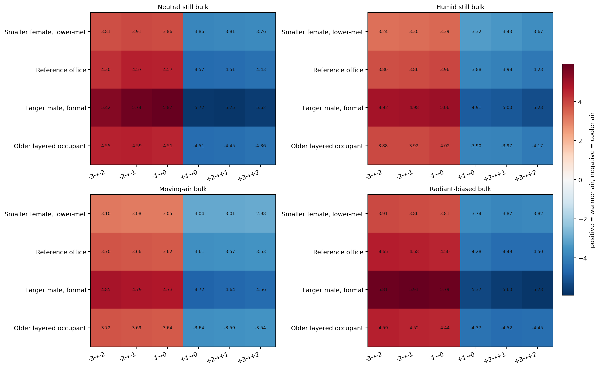
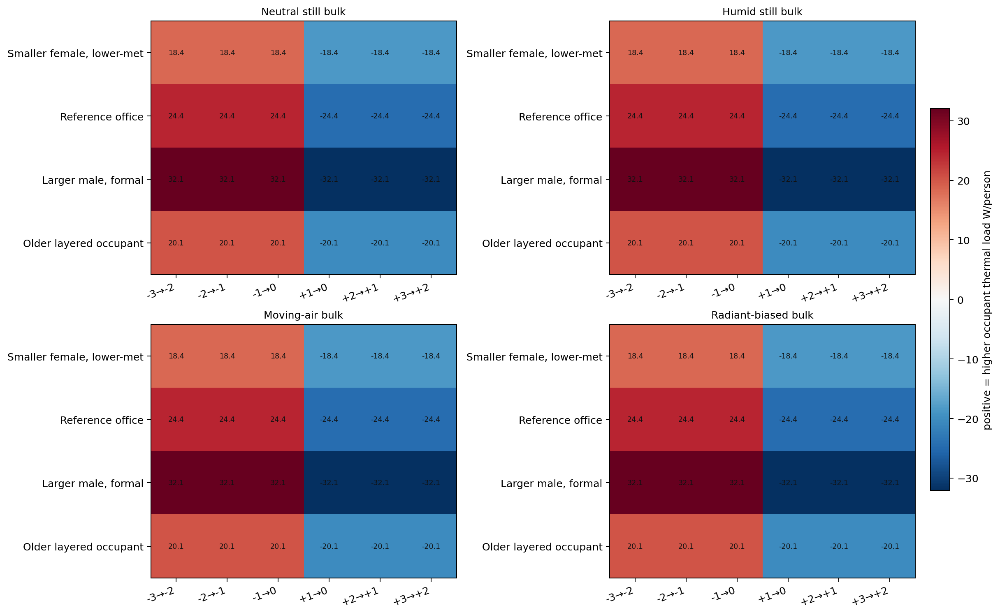
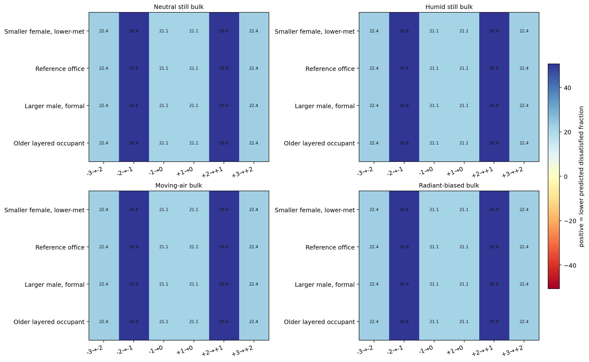
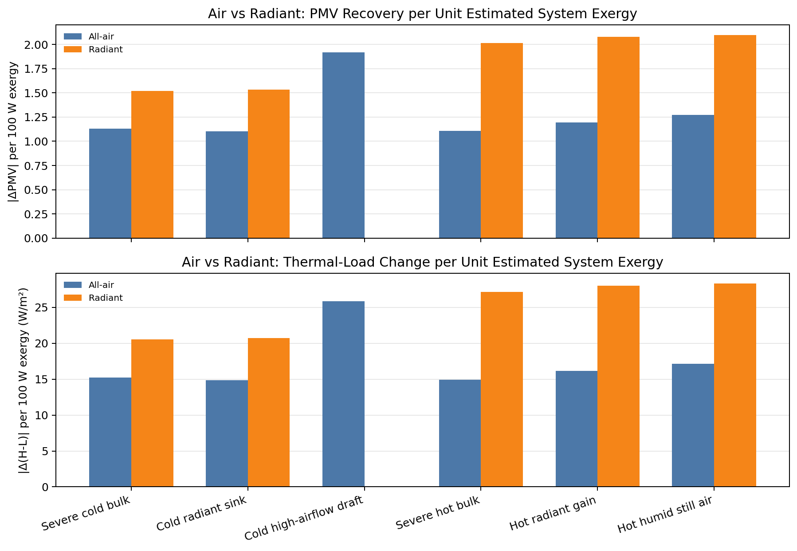
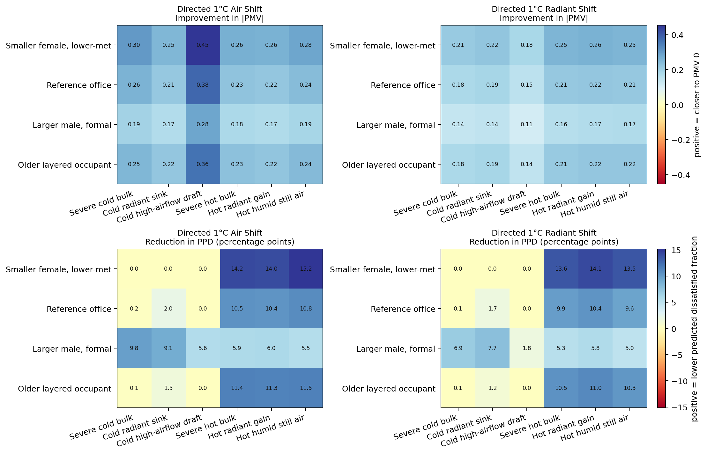
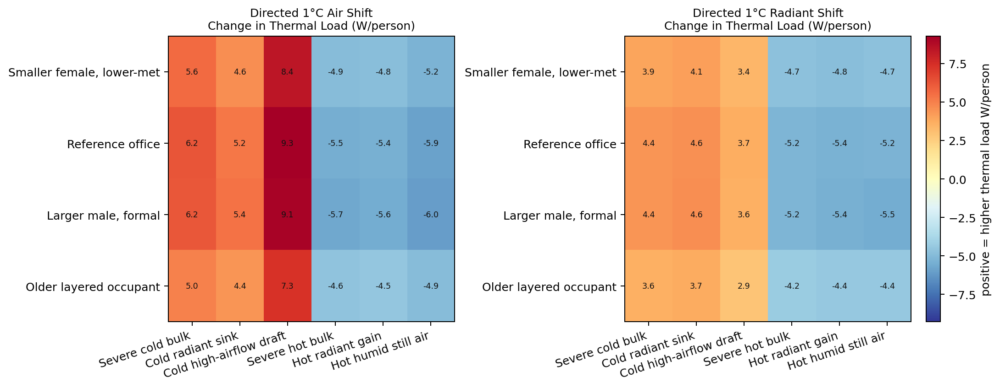
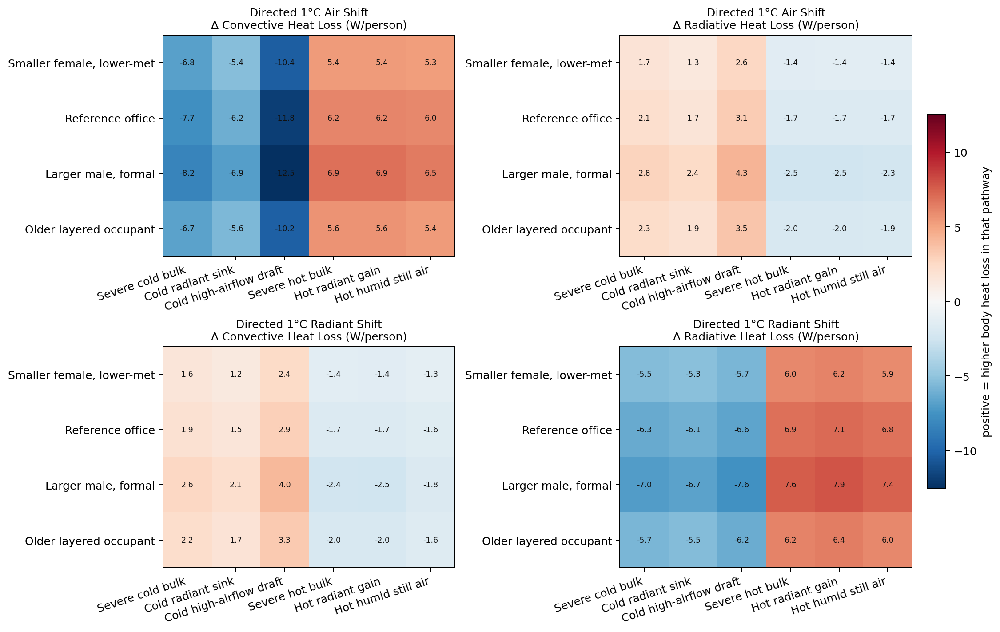

This study separates four things that are often collapsed together: PMV as a deterministic mapping from thermal load, PPD as a deterministic mapping from PMV, pathway decomposition as the way the environment achieves that load, and system-side exergy as the cost of producing that environmental change. That distinction matters because PMV itself does not “know” whether a recovery came through air or radiation once the total thermal load has been changed.
In this codebase, PMV is computed exactly as PMV = (0.303 * exp(-0.036 * M) + 0.028) * (H - L), where H = M - W is internal sensible generation and L = Q_conv + Q_rad + E_sk + Q_res is the total heat loss term. PPD is then computed as 100 - 95 * exp(-0.03353 * PMV^4 - 0.2179 * PMV^2). So for a fixed metabolic rate, PMV is linear in thermal load, and PPD is a deterministic transform of PMV. PPD is not model accuracy, confidence, or probability that a TSV prediction is correct; it is the model's predicted fraction dissatisfied under the PMV framework. The default office reference in this branch is set to 0.9 met, and the comparison band is 0.8 / 0.9 / 1.0 / 1.2 met, rather than quietly assuming 1.0 met as the universal sedentary office default.

The scatter at left is sampled directly from the comfort engine across many environmental states. The dashed lines are the exact theoretical relation for each metabolic rate. They lie on top of the samples because, for a fixed M, PMV is literally linear in H - L.
| Occupant | PMV factor |
|---|---|
| 0.8 met | 0.0848 |
| 0.9 met | 0.0740 |
| 1.0 met | 0.0653 |
| 1.2 met | 0.0526 |
Implication: once total thermal load is known, PMV mostly hides pathway identity. Pathways matter because they are how the environment changes H - L, not because PMV assigns separate meaning to convective and radiative watts.
The PPD curve has a fixed minimum of 5% at PMV = 0. That minimum is built into the model form. This is why PPD should be read as a dissatisfied-fraction surrogate under the PMV framework, not as an empirical accuracy score for the PMV predictor.


The contour panels show that PMV = 0 is not a single state. It is a manifold in environmental input space. Different combinations of air temperature, radiant temperature, humidity, and air speed can all settle at PMV = 0 for the same occupant.
This layer answers the more precise question behind TSV labels: if you ask the model to move exactly one PMV label toward neutrality, such as -3→-2 or -1→0, is the required change the same? The answer splits in two. For a fixed profile, the required change in H-L is nearly identical by construction because PMV is linear in thermal load. But the required ΔTa is not identical, because the mapping from air temperature to thermal load depends on the starting environmental family and pathway balance.
| Profile | Avg |ΔTa| for one PMV step (°C) | Avg |Δ(H-L)| (W/m²) | Avg |Δ(H-L)| (W/person) | Avg ΔPPD (points) | Avg |ΔQ_conv| (W/person) | Avg |ΔQ_rad| (W/person) |
|---|---|---|---|---|---|---|
| Smaller female, lower-met | 3.53 | 11.80 | 18.4 | 31.4 | 20.6 | 5.3 |
| Reference office | 4.14 | 13.50 | 24.4 | 31.4 | 28.1 | 7.7 |
| Larger male, formal | 5.28 | 15.30 | 32.1 | 31.4 | 40.4 | 14.0 |
| Older layered occupant | 4.15 | 11.80 | 20.1 | 31.4 | 25.2 | 8.8 |
This is where PMV and PPD split cleanly. The model says one PMV step is a constant thermal-load step within a profile, but the same one-step transition does not carry constant air-temperature, pathway, or dissatisfaction meaning.

Each cell shows the air-temperature move needed to go one PMV label closer to zero under a given environmental family. Positive values mean warming; negative values mean cooling. This is where the nonlinearity lives.
These heatmaps show the signed change in total occupant thermal load in W/person for the same one-step PMV move. Within each profile the rows are almost uniform, because a one-unit PMV step corresponds to a fixed load step set by that profile's PMV factor. What changes with profile is the size of that fixed load step, and what changes with state is how the air system has to redistribute pathway watts to achieve it.


The same one-label PMV transition does not produce the same change in predicted dissatisfaction. That is the useful thing PPD adds near the comfort rim. A step from -2→-1 or +2→+1 can remove much more dissatisfaction than a step from -1→0 or +1→0, even though all are one-unit PMV moves.
| Scenario | All-Air | Radiant | Lower exergy winner | ||||||
|---|---|---|---|---|---|---|---|---|---|
| Δ control | Exergy | |ΔPMV| / 100W | Dominant pathway | Δ control | Exergy | |ΔPMV| / 100W | Dominant pathway | ||
| Severe cold bulk | 13.2 C | 265.6 W | 1.128 | convection | 15.8 C | 198.0 W | 1.521 | radiation | Radiant (Tr only) |
| Cold radiant sink | 10.9 C | 219.3 W | 1.102 | convection | 12.5 C | 156.7 W | 1.535 | radiation | Radiant (Tr only) |
| Cold high-airflow draft | 11.0 C | 221.3 W | 1.917 | convection | — | — | — | — | All-air (Ta only) |
| Severe hot bulk | 7.1 C | 142.9 W | 1.106 | convection | 7.7 C | 79.0 W | 2.012 | radiation | Radiant (Tr only) |
| Hot radiant gain | 6.5 C | 130.8 W | 1.195 | convection | 7.3 C | 74.9 W | 2.076 | radiation | Radiant (Tr only) |
| Hot humid still air | 6.4 C | 128.8 W | 1.272 | convection | 7.6 C | 77.9 W | 2.097 | radiation | Radiant (Tr only) |

This comparison answers the practical question directly. If you compare air and radiant recovery only by PMV target, both can often hit the same recovered PMV. If you compare them by system exergy, the ranking changes.
This layer asks the next question directly: for different occupant archetypes, how much does a directed 1°C change in Ta or Tr move PMV toward neutrality, and which pathway watts actually move? The four profiles below change not only met and clo, but also body size. In the standard PMV formulation, body size does not directly change PMV once everything is normalized by body area, but it does change the total wattage when those pathway terms are converted back into W/person. Age and sex are therefore only entering here through assumed body size, clothing, and metabolic-rate choices; they are not explicit terms in Fanger's PMV equation.
| Profile | Age | Sex | Height (cm) | Weight (kg) | BSA (m²) | Clo | Met | Metabolic rate (W/person) |
|---|---|---|---|---|---|---|---|---|
| Smaller female, lower-met | 30 | female | 160 | 55 | 1.56 | 0.45 | 0.8 | 72.7 |
| Reference office | 40 | male | 170 | 70 | 1.81 | 0.50 | 0.9 | 94.7 |
| Larger male, formal | 35 | male | 182 | 88 | 2.10 | 0.70 | 1.0 | 121.9 |
| Older layered occupant | 70 | female | 165 | 64 | 1.70 | 0.70 | 0.8 | 79.3 |

The heatmaps at left show the reduction in |PMV| from a directed 1°C change: colder-than-neutral baselines get a warming move; hotter-than-neutral baselines get a cooling move. The lower row translates the same perturbation into total occupant thermal-load watts.
| Profile | Avg |PMV| improvement, air | Avg |PMV| improvement, radiant | Avg ΔPPD, air | Avg ΔPPD, radiant | Avg |ΔQ_conv|, air (W/person) | Avg |ΔQ_rad|, radiant (W/person) |
|---|---|---|---|---|---|---|
| Smaller female, lower-met | 0.30 | 0.23 | 7.2 | 6.9 | 6.4 | 5.8 |
| Reference office | 0.26 | 0.19 | 5.7 | 5.3 | 7.3 | 6.6 |
| Larger male, formal | 0.20 | 0.15 | 7.0 | 5.4 | 8.0 | 7.4 |
| Older layered occupant | 0.25 | 0.19 | 6.0 | 5.5 | 6.5 | 6.0 |
This is the point your original question was pushing toward: the same 1°C control move does not have the same PMV or PPD leverage across profiles and discomfort origins, even before pathway watts are compared.
The PPD view is useful because it restores acceptability meaning, but it should not erase the body-load interpretation. These panels keep the total thermal-load movement visible in W/person. In the current cases, directed air shifts usually move more total load than directed radiant shifts for the same nominal 1°C input, because the air move perturbs multiple terms at once.

The pathway heatmaps separate ΔQ_conv from ΔQ_rad in W/person. They make the mechanism visible instead of leaving it hidden behind a single PMV scalar.
